心にそっと灯りがともる宿
心にそっと灯りがともる宿
灯りに寄り添う
やすらぎの刻
Serenity in the Warmth of Light
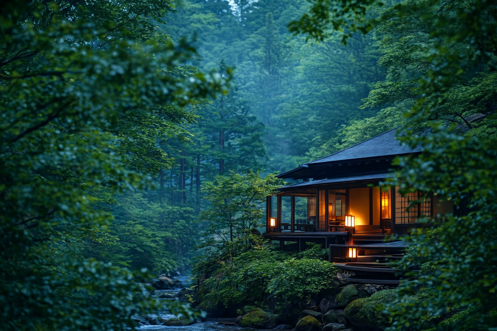
行灯のあたたかな光が、
日々の喧騒から静かにあなたを離し、
心の輪郭をゆっくりとほどいていく。
畳の香り、木の温もり、
ふと漏れる床の間の影——。
音を立てずに寄り添う“和のやすらぎ”が、
今日という一日の続きを
やさしく見つめています。
風灯について
山をわたる風がやわらかく頬を撫で、
行灯の光が静かに影を落とす——。
自然の息づきと、人のぬくもり。
そのどちらも感じられる場所として、
“風灯（ふうとう）”は生まれました。
木々のさざめき、揺れる灯り、
深い呼吸が戻ってくるような静けさが、
訪れる人の心をそっとほどいていきます。
風に寄り添い、灯に包まれるような、
静かなひとときを
どうぞお過ごしください。

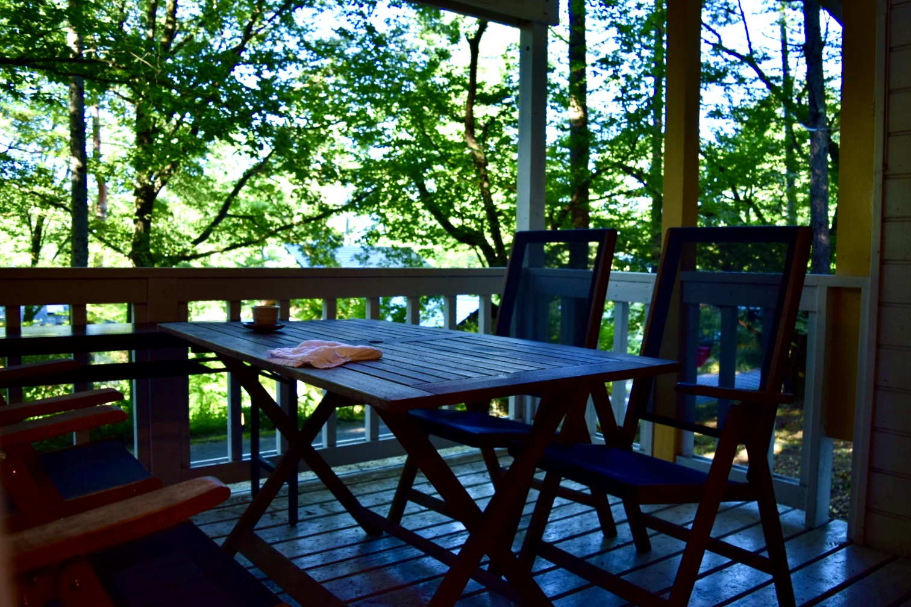
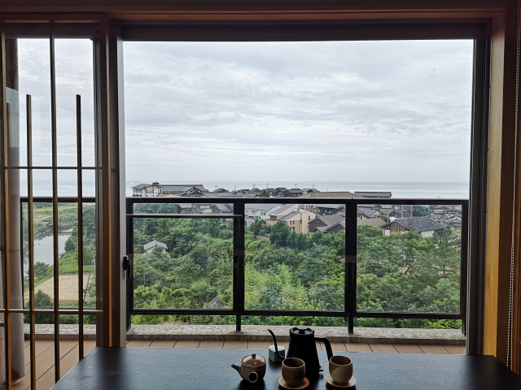
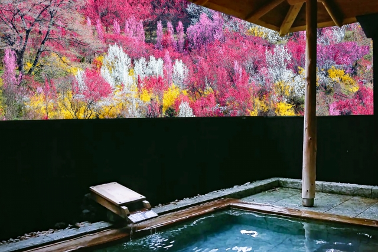
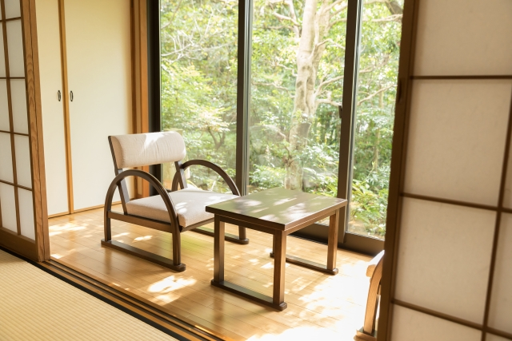
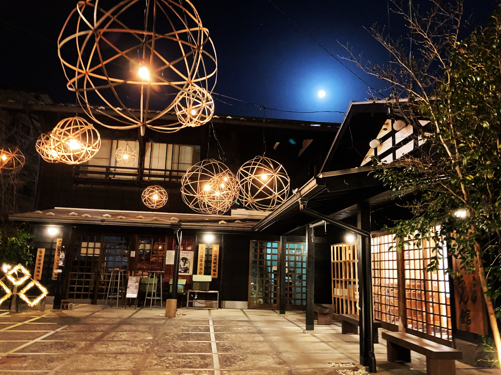
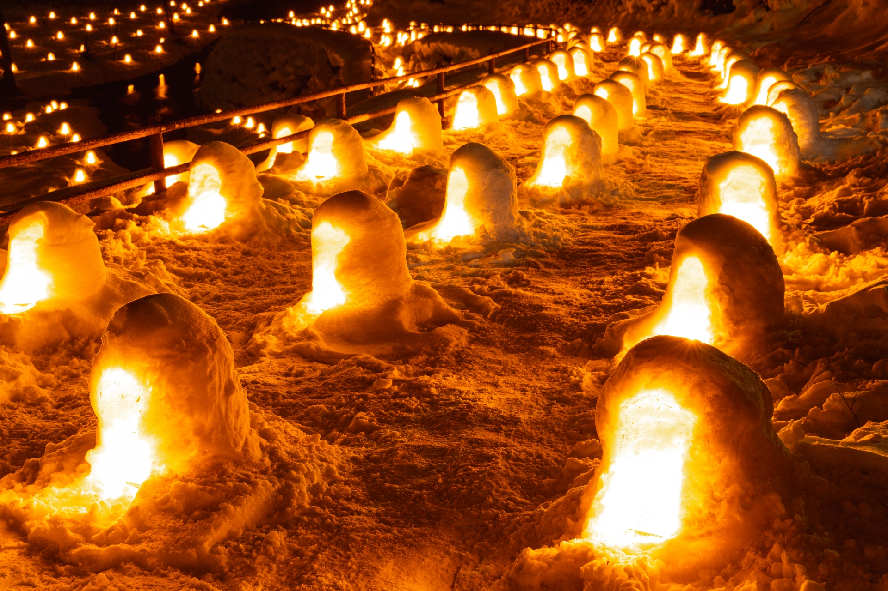
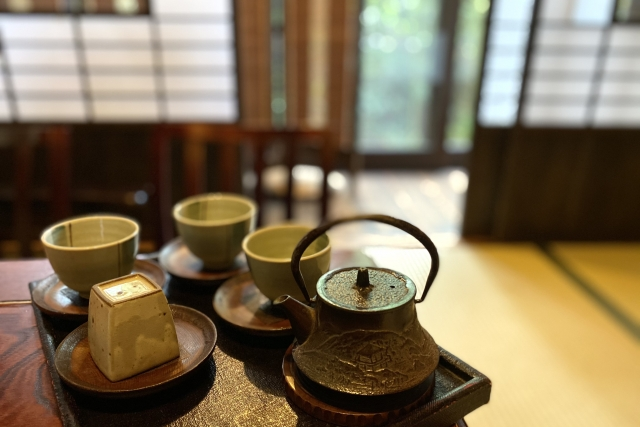

窓を開ければ、緑の気配や風の音がそっと入り込み、 ゆったりとした時間が流れます。 自然のただ中で、何もしないという豊かさを愉しむ。
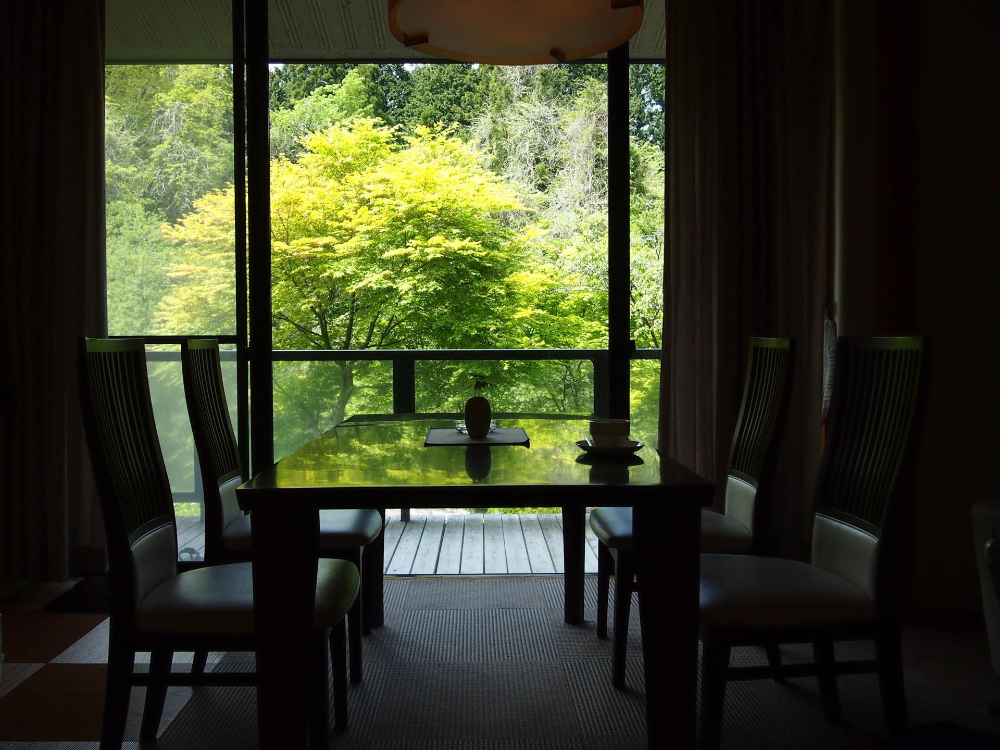
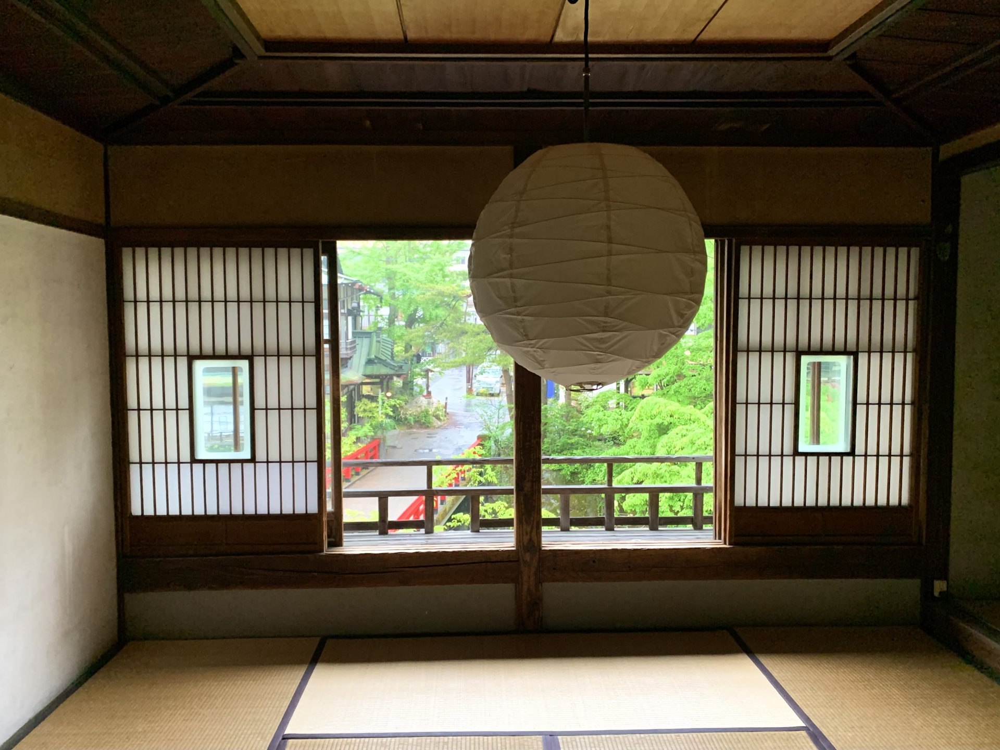
すべての客室は、自然に寄り添う離れ造り。
約五千坪の広大な敷地に、十一室だけを贅沢に配したつくりです。 どのお部屋にも、源泉100％の湯をかけ流しで味わえる 露天風呂と内湯をご用意。 窓を開ければ、緑の気配や風の音がそっと入り込み、 ゆったりとした時間が流れます。 自然のただ中で、何もしないという豊かさを愉しむ。 そんな滞在を、風灯がお届けします。
湯に浸かるひとときも、自然とともに。
すべての客室に備えた湯殿は、 山の静けさに抱かれるように佇む、離れの露天風呂と内湯。 湯に浸かるだけで、季節の息づかいを感じられる――
ここでの入浴は、癒しを超えて“体と心がほどけてゆく時間”。
自然の中で、ただ湯に身を委ねる贅沢を。 風灯が、お届けします。

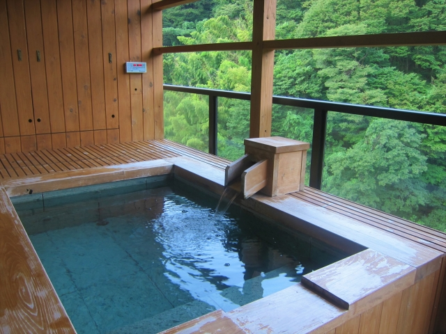
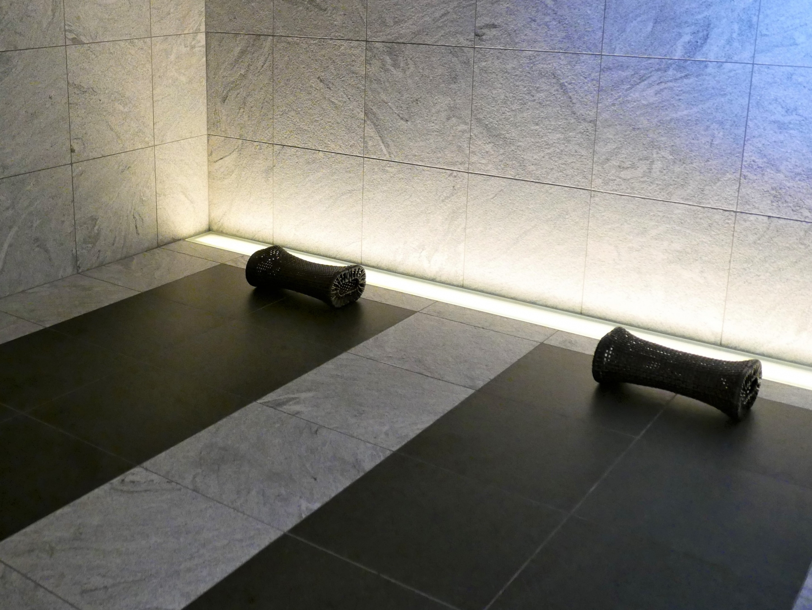
ここでの入浴は、癒しを超えて“体と心がほどけてゆく時間”。 自然の中で、ただ湯に身を委ねる贅沢を。
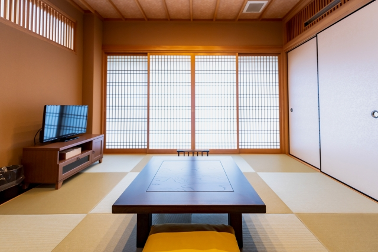
ViewMore
ViewMore
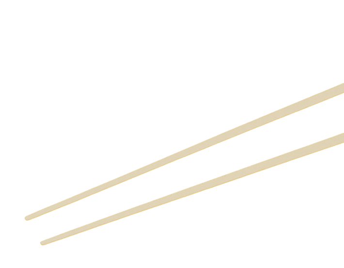
お食事
静かな四季がもたらす、ささやかな恵み。 地の素材に向き合い、余計な手を加えず仕立てた一皿が、 舌だけでなく、心にも深く沁みわたります。 灯りを落としたダイニングで、 ゆっくりと流れる時間とともに味わう、風灯の料理。 滞在のひとときを、より豊かに彩ります。
ViewMore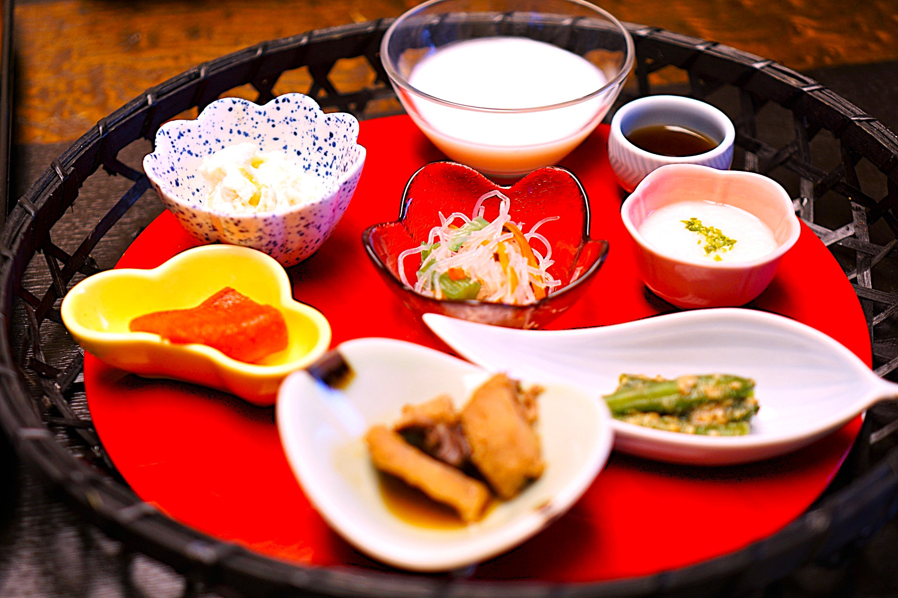
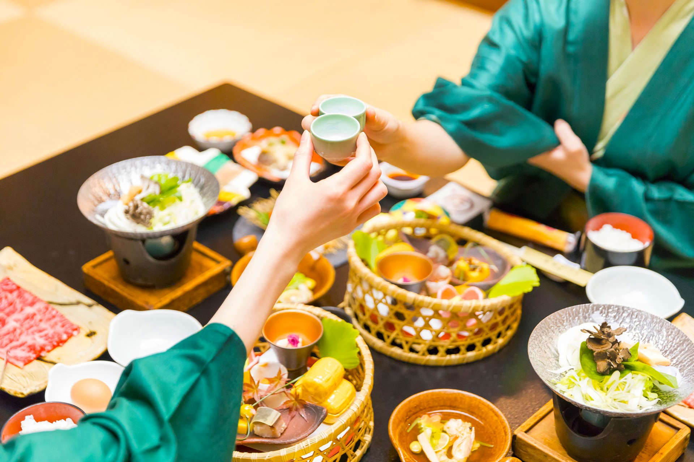
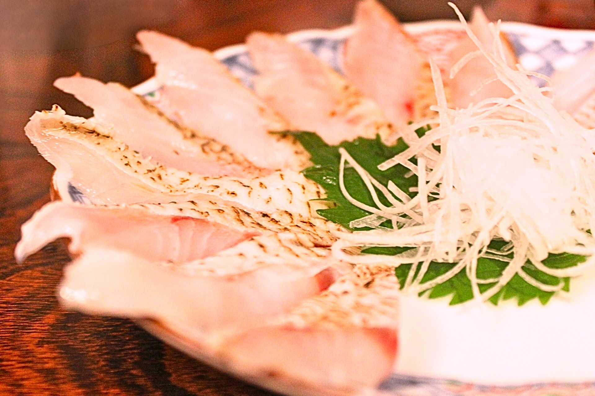
.jpg)
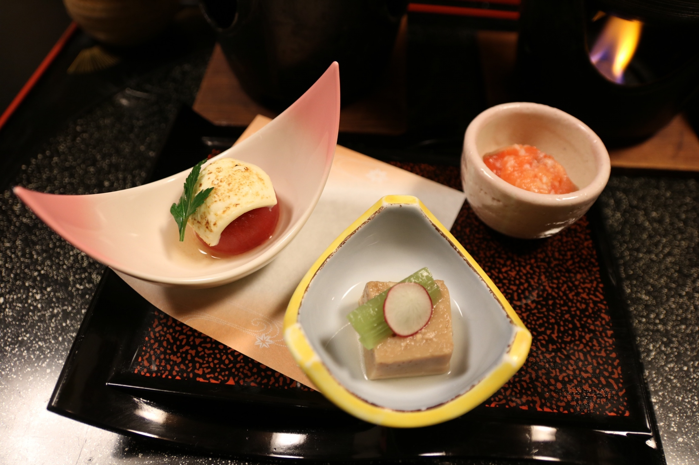
 宿泊予約
宿泊予約